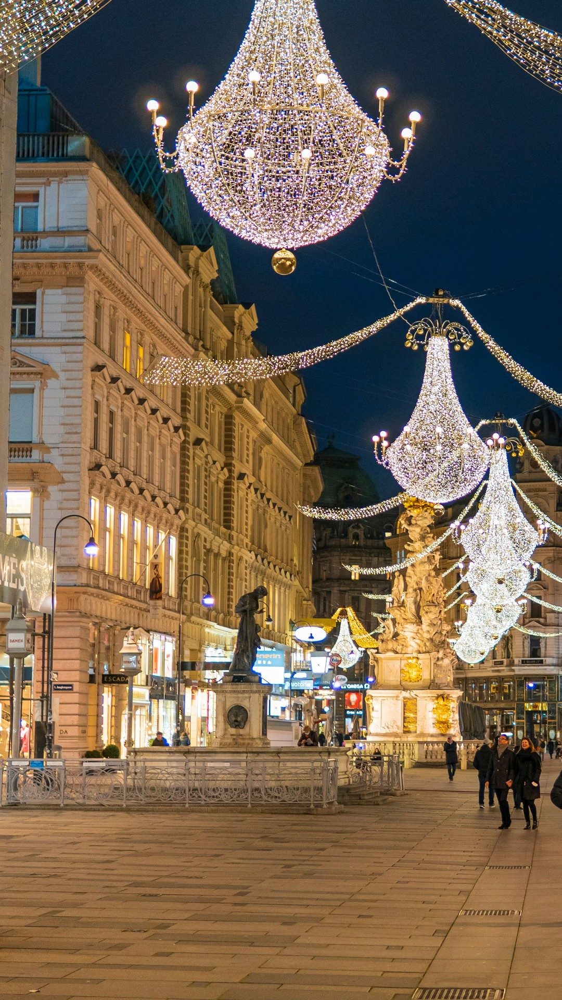
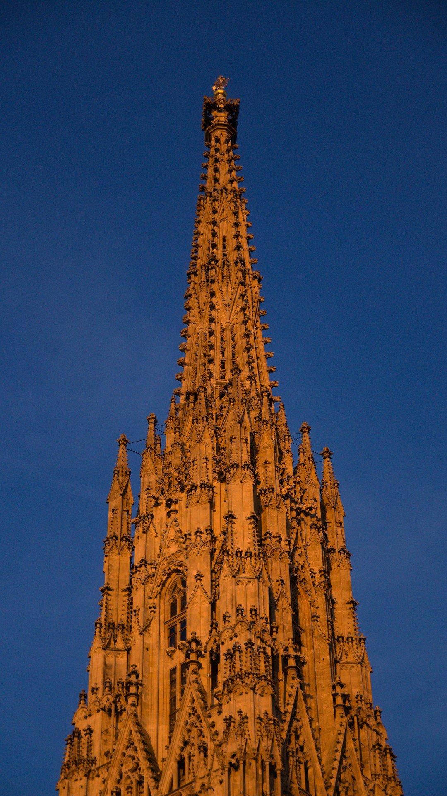
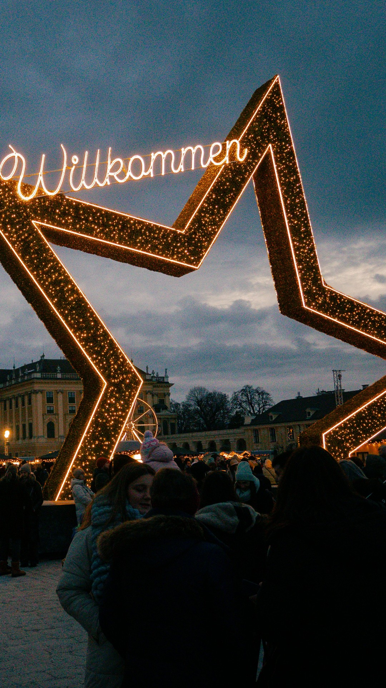
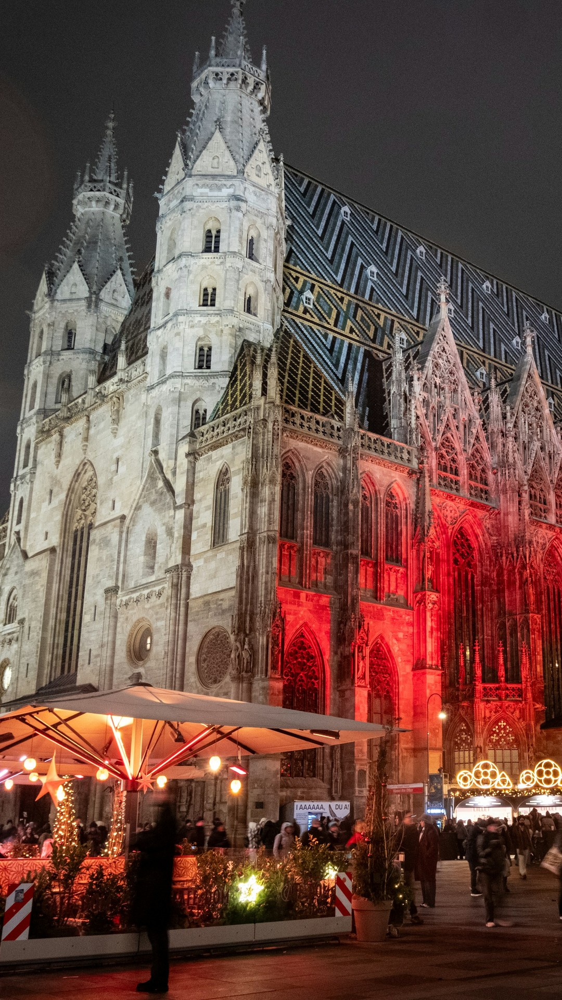
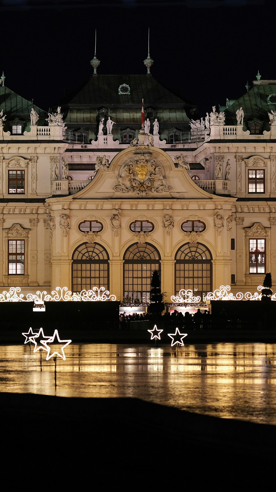

DÍA 1
DÍA 2
DÍA 3
Graben, Viena
La Catedral, Viena
Schönbrunn, Viena
Kohlmarkt
Stephansplatz
Hofburg
Maria-Theresien-Platz
Schönbrunn
Belvedere
Karlsplatz
El puente de
diciembre está al caer
y nadie ha mirado nada.
Viena, 3 días,
ya organizada.
+ 5 mercadillos a la puerta de sus paradas
Te los apuntamos aparte: no vienen en el plan.
DÍA 1
El centro, la Catedral
y el Graben
Mercadillo 1 de 5
En la plaza de la Catedral · de 11 a 21 h
DÍA 2
Hofburg, museo
y Naschmarkt
Mercadillo 2 de 5
Entre dos museos · hasta las 21 h
DÍA 3
Schönbrunn
Belvedere
Karlsplatz
Mercadillo 3 de 5
Mercadillo 4 de 5
Mercadillo 5 de 5
En el patio del palacio · de 10 a 21 h
En el parque del palacio · hasta las 21 h
Art Advent · de 12 a 20 h
5 MERCADILLOS A LA PUERTA DE LAS PARADAS
Guárdalo y
mándaselo al grupo.
DÍA 1
Plaza de la Catedral
de 11 a 21 h
DÍA 2
Entre los dos museos
hasta las 21 h
DÍA 3
Patio de Schönbrunn
de 10 a 21 h
DÍA 3
Parque del Belvedere
hasta las 21 h
DÍA 3
Karlsplatz (Art Advent)
de 12 a 20 h
No vienen en el plan de la app: quedan a la puerta
de estas paradas. Abren todo el puente de diciembre.

Nomad: guía de viajes
El viaje de 3 días ya está hecho:
lo copias y le pones tus fechas.

Pronto en Android™
Enlace en el perfil
La app es gratis. El viaje de 3 días cuesta 2,99 €:
un pago para todo el grupo.
Apple, el logotipo de Apple e iPhone son marcas comerciales de Apple Inc., registradas en EE. UU. y en otros países. App Store es una marca de servicio de Apple Inc. Android es una marca comercial de Google LLC.
Puente de
diciembre en Viena
3 días y 5 mercadillos a la puerta.